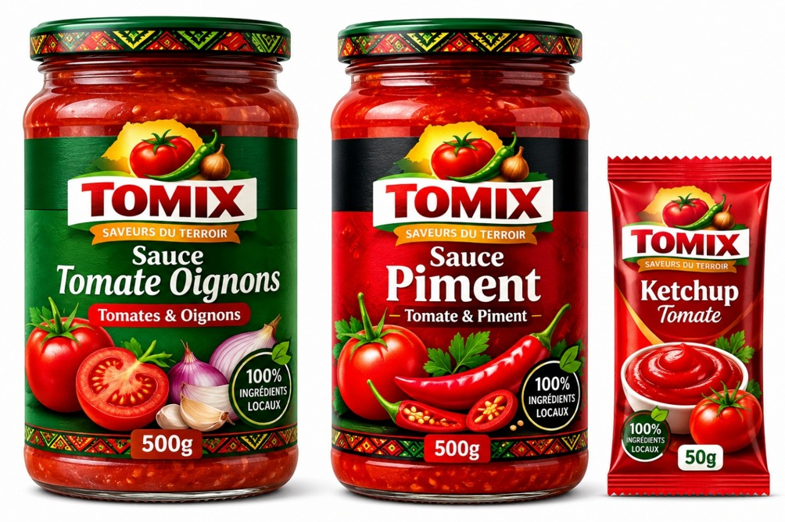

Best-seller

Sauce Tomate Oignons
500 g 600 FCFA / 12 000 FCFA le cartonUn équilibre parfait entre tomates mûres et oignons fondants, idéale pour accompagner riz, pâtes et viandes.
Voir le produit →TOMIX sélectionne avec soin des ingrédients frais et locaux pour offrir à vos plats des sauces savoureuses, naturelles et authentiques — sans conservateurs, sans colorants.

Tomates, oignons et piments sélectionnés localement.
Recettes naturelles, sans colorants ajoutés.
Produit dans notre unité de Diamniadio, Dakar.
Pots à l'unité ou cartons de 20 pour les professionnels.
Chaque pot TOMIX raconte le même engagement : des produits frais, une recette simple, un goût authentique.
Un équilibre parfait entre tomates mûres et oignons fondants, idéale pour accompagner riz, pâtes et viandes.
Voir le produit →
Pour les amateurs de sensations fortes : tomates et piments relèvent grillades, sandwichs et plats de riz.
Voir le produit →
Saveur douce et naturelle en sachet individuel, parfait pour frites, sandwichs et snacks à emporter.
Voir le produit →
TOMIX est né d'une conviction simple : les meilleures sauces se préparent avec des ingrédients frais, choisis près de chez nous. Depuis notre unité de production de Diamniadio, nous transformons tomates, oignons et piments locaux en recettes gourmandes, pensées pour la cuisine sénégalaise et au-delà.
Chaque pot est fabriqué sans conservateurs ni colorants, pour un goût aussi proche que possible de la sauce maison.
Ingrédients locaux
Recettes signatures
Conservateur ajouté
Pots / carton pro
Commandez vos pots TOMIX à l'unité ou en carton, pour votre cuisine ou votre commerce.